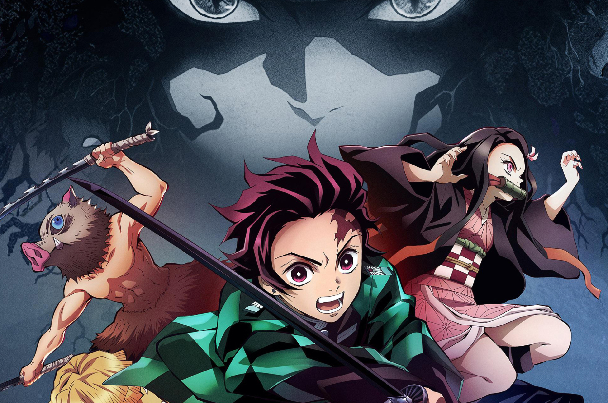

What I do,what I like,what consumes most of my time etc.
Been engineering softwares for almost 2 years now,
JavaScript is something that I have worked with the
most and feel most comfortable with. I've also
contributed to several open source projects and built
some of my own
which are all available on my GitHub.

Anime is a super important part of my life, they have
pretty trivial teachings but I'm fascinated to how they
mirror the real life, it's something that lifts my mood,
motivates me and help me have a persistent growth
mindset at all times. Also, to be able to complete 100
distinct animes before my graduation is something
that I'm proud of.

I started playing CS:GO as well, initially just to try it but
then ended up playing it 600+ hrs, I've also played a
ton of table tennis with my batch-mates and enjoyed it a
lot as well,
apart from that I recently realized I like
travelling as well and
was lucky enough to do a Japan trip
which I've been looking forward
to for the longest time.